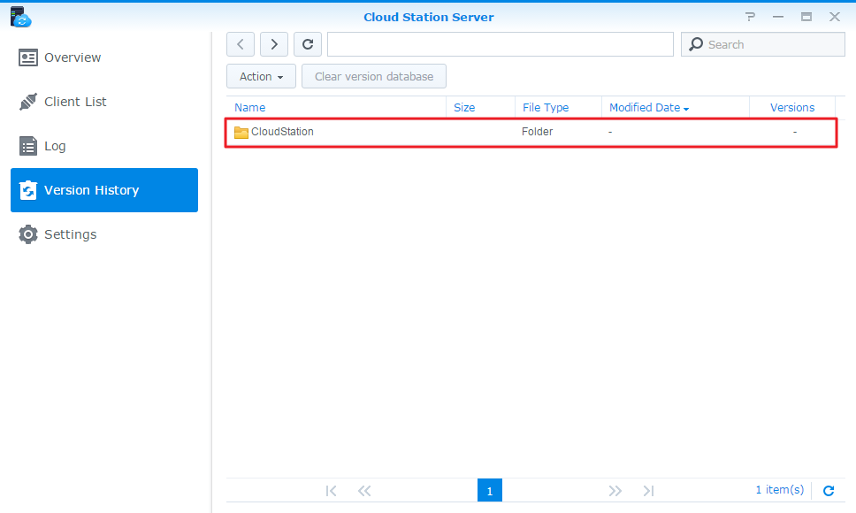

Oversigt
Cloud Station for Synology NAS er et filsynkroniseringsprogram, der sætter dig i stand til nemt at synkronisere filer på din Synology NAS med andre enheder, f.eks. computere eller mobile enheder (med DS cloud). Installer Cloud Station Server på din Synology NAS og Cloud Station Drive på din computer, så synkronisering af filer, der er gemt på din computer, automatisk synkroniseres med din Synology NAS.
Konfigurer forbindelsen mellem din Synology NAS og computeren
- Gå til Pakkecenter, søg efter Cloud Station Server, og klik så på Installer.
- Start Cloud Station Server.
- På fanen Oversigt klikker du på -knappen under Cloud Station Drive for at downloade Cloud Station Drive til dit operativsystem. (Du kan også downloade Cloud Station fra Synologys Downloadcenter).
- Start installationsprogrammet på computeren, og følg instruktionerne på skærmen.
- Efter installationen kører du Cloud Station på computeren. Klik på Start nu
- Indtast adressen på den Synology NAS, der kører Cloud Station (eller QuickConnect ID), brugernavn og adgangskode. Du kan klikke på søgeikonet til højre for at søge efter IP'er på dit LAN. Klik på Næste.
- Vælg de mapper, du vil synkronisere på din Synology NAS og på din computer ved at klikke på ikonerne Rediger. Så kan du klikke på Avanceret for at konfigurere synkroniseringsindstillinger
- Afmarker eventuelle mapper, som du ikke vil synkronisere.
- Angiv en maksimal filstørrelse eller sortlist filnavne eller filtyper, så de ikke synkroniseres.
- Vælg, om du vil synkronisere tovejs eller kun downloade data fra din Synology NAS.
- Klik på Udført for af fuldføre konfiguration.
- Du kan finde Cloud Station-ikonet i systembakken.
- Klik på systembakkeikonet for at åbne bakkemenuen. Her kan du se fremskridt og status for dine filer. Her kan du se fremskridt og status for dine filer. Klik på Hovedprogram for at starte Cloud Station.
- Ved start vises du nogle tip om, hvordan du bruger Cloud Station. Klik på højrepil for at se flere tip, eller klik på Onlineselvstudier for at få flere oplysninger. Hvis du ikke har brug for tip, markerer du feltet ved siden af Vis ikke dette igen.
- Nu kan du administrere dine synkroniseringsopgaver i Cloud Station Drive.


Download en tidligere version af en synkroniseret fil
- Højreklik på ikonet Cloud Station Drive i systembakken, og klike på mappeikonet.
- Højreklik på den valgte fil, og vælg Synology Cloud Station > Gennemse tidligere versioner.
- Find den version, som du vil downloade, og klik på downloadikonet.


Download eller gendan en tidligere version af en synkroniseret fra Cloud Station Server
- Gå til Cloud Station Server > Versionshistorik, og find den fil eller mappe, som du vil gendanne. 
- Vælg den fil, du vil hente, og klik på Handling > Gennemse tidligere versioner.
- Vælg den version af den fil, du vil downloade, og klik på Download. Eller, hvis du ikke er sikker på, du vil have den valgte version gendannet, skal du klikke på Gendan, hvorefter den bliver overskrevet med din aktuelle version.


Vigtige noter
- Behold altid historiske versioner, i tilfælde af at en fil fjernes eller overskrives ved et tilfælde.
- Under Globale indstillinger kan du konfigurere, om en fil bliver hentet igen fra NAS eller slettes på din NAS, når du sletter en fil på computeren.
Synkroniser data til mobilenheder
DS cloud findes gratis på Apple App Store og Google Play Store. Du kan også scanne QR-koden nedenfor for at downloade direkte.